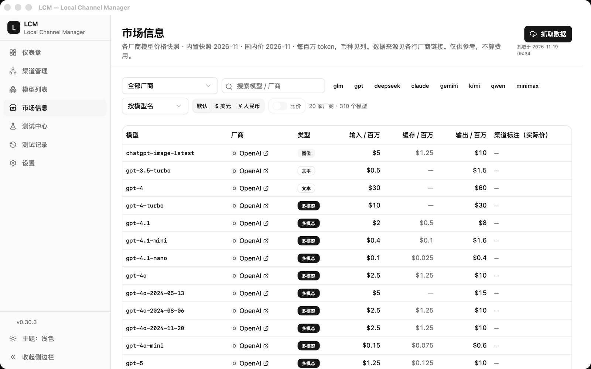
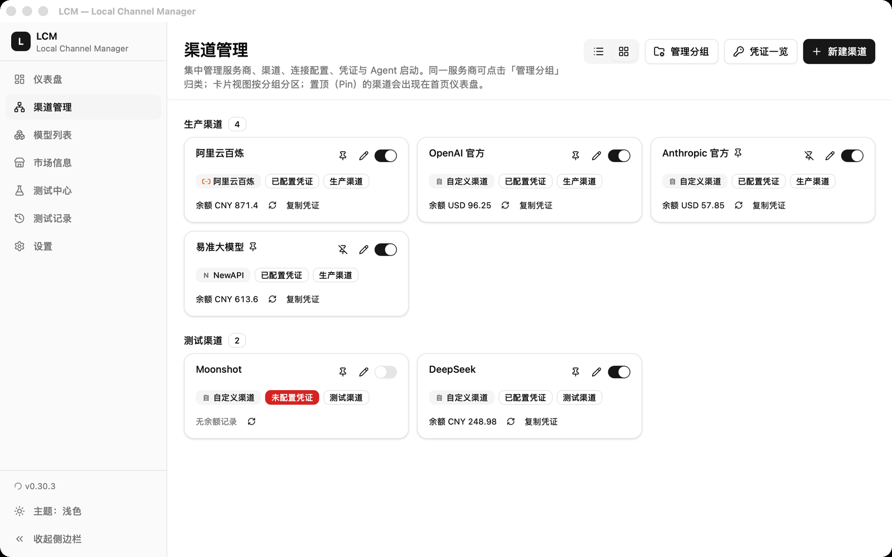
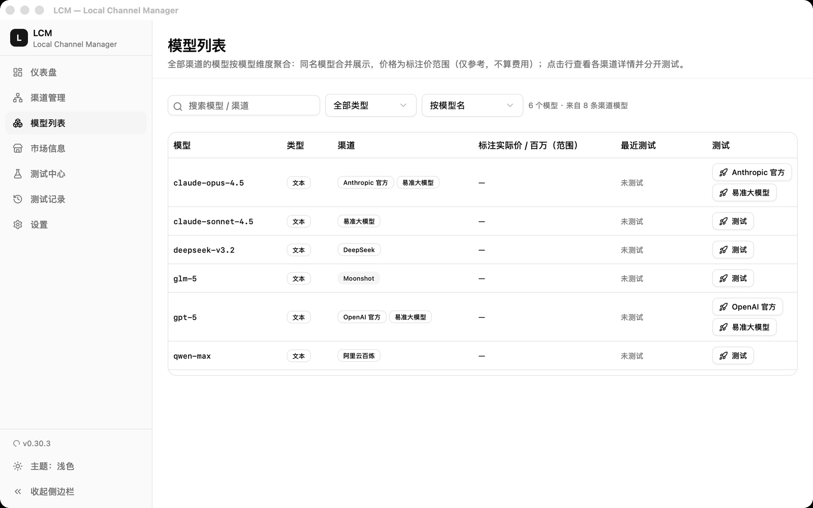
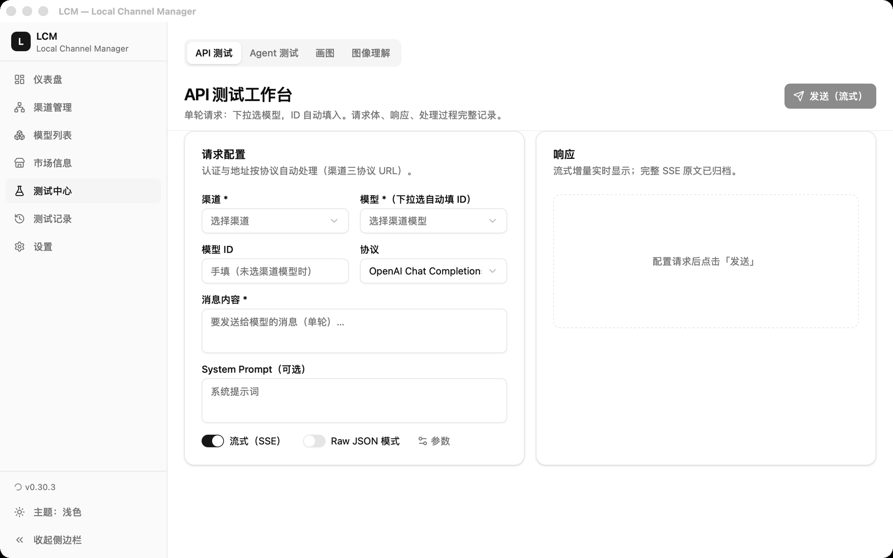
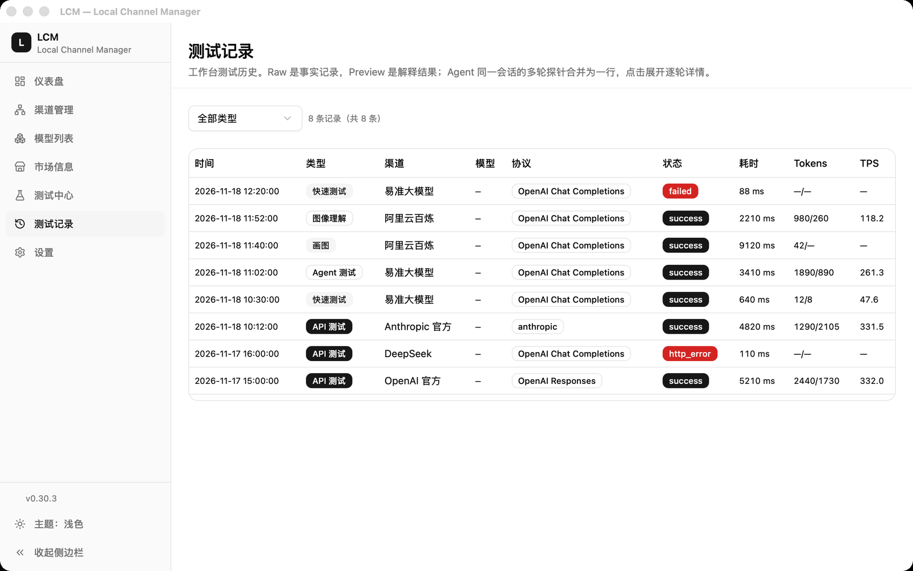
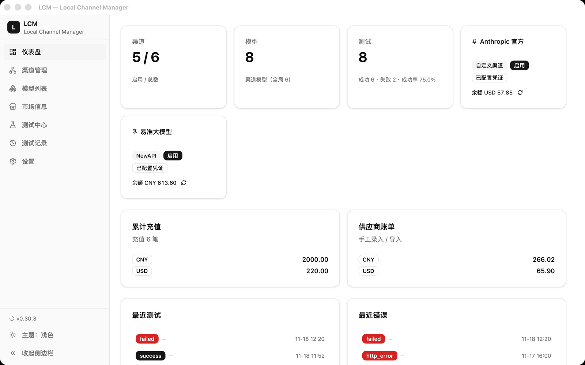

本地管理你的每一个
大模型渠道
统一管理 AI 服务商、API 渠道、模型、价格、充值与账单；内置 API 测试、真实 Agent 调用 （Claude Code / Codex CLI）、画图与图像理解、测试记录与响应分析。数据全部保存在本机。
忠实呈现渠道原生能力，不擅自优化、转换或修复用户的请求。 LCM 不是 AI Gateway、API Proxy 或协议转换服务 —— 它帮助你看清每个渠道真实的样子。
xattr -cr /Applications/LCM.app
应用预览
市场数据为真实抓取快照；页面数据为演示数据






功能一览
本地优先 · Tauri 2 + Rust + SQLite · macOS / Windows / Linux
渠道管理
服务商模板、多渠道实例、按协议配置 Base URL、凭证安全（系统凭证库 + 掩码展示）、Agent 兼容性记录。
模型与价格
单一价 / 阶梯价 / 分时段价 + 倍率折算实际价，市场价弹窗参考填写，比价与排序按最高档口径。
市场信息
models.dev 与自定义 NewAPI 数据源价格快照，常用模型快捷筛选、币种换算、与自有渠道标注价并排比价。
API 测试工作台
Chat Completions / Anthropic / Responses 三协议，流式输出，Raw 与 Preview 分离归档，可复制 curl 复现。
Agent 启动器
启动式渠道切换：Claude Code 环境变量注入 / Codex 独立 CODEX_HOME；不改已有配置、不代理请求。
画图与理解
图片生成 / 编辑 / 图像理解工作台，结果本地归档，随时回看与重新解析。
资金与账单
充值、供应商账单（CSV / Excel 导入）、余额快照与估算余额三分开；NewAPI / 百炼余额查询。
错误诊断与归因
知识库匹配 + 多层网关归因：区分中转网关层与上游厂商，事实与推测分开，置信度明确。
只读 MCP
lcm-mcp（stdio）：把渠道、模型、测试记录、诊断暴露给外部 AI；凭证零输出。
应用内更新
检测新版本后一键更新：下载 → minisign 验签 → 自动替换 → 自动重启，无需手动覆盖安装。
设计原则
这些红线决定了 LCM 与「网关类工具」的本质区别
- 1原生优先用户配置什么就原样发送什么，渠道返回什么就原样记录什么。
- 2Agent 与工作台严格隔离Agent 使用渠道原生 API 不经过 Adapter；只有工作台允许 Adapter 且透明记录。
- 3原始数据与展示数据分离Raw 是事实记录，Preview 是解释结果，Preview 不得覆盖 Raw。
- 4处理透明任何处理（序列化、认证头、解析、归档、诊断）如实记录为 ProcessingEvent。
- 5失败归因准确错误性质与来源分开，事实与推测分开，置信度必须明确。
- 6凭证安全密钥不明文入库、不进日志与 AI 上下文；默认掩码，明文查看由用户主动操作。
全部数据（SQLite、归档、凭证）保存在本机应用数据目录，没有云服务、没有账号体系。 应用内更新经 minisign 签名校验，更新包被篡改无法通过验证。